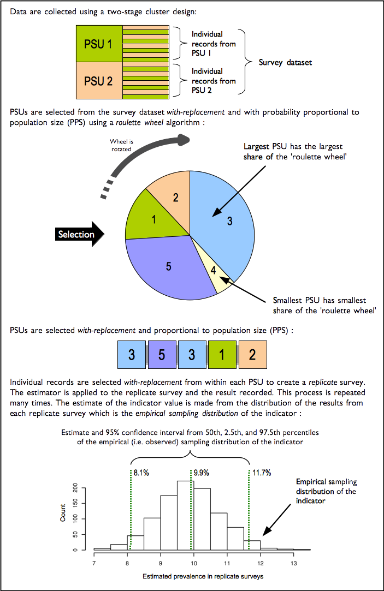
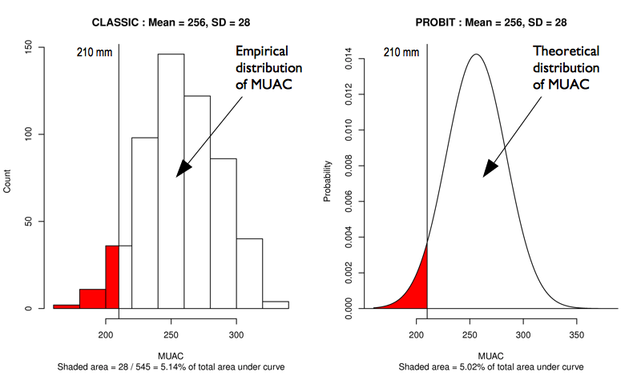

The RAM-OP Workflow is summarised in the diagram below.
The oldr package provides functions to use for all steps after data collection. These functions were developed specifically for the data structure created by the EpiData or the Open Data Kit collection tools. The data structure produced by these collection tools is shown by the dataset testSVY included in the oldr package.
## Showing first 10 rows of the dataset head(testSVY, 10) #> ad2 psu hh id d1 d2 d3 d4 d5 f1 f2a f2b f2c f2d f2e f2f f2g f2h f2i f2j f2k #> 1 1 201 1 1 1 67 2 5 2 3 2 1 1 2 2 1 1 1 2 2 2 #> 2 1 201 2 1 1 74 1 2 2 3 2 1 1 2 1 1 1 1 2 2 2 #> 3 1 201 3 1 1 60 1 2 2 2 2 2 2 2 2 2 2 2 2 2 2 #> 4 1 201 3 2 1 60 2 2 2 3 2 2 1 2 2 2 1 1 2 2 2 #> 5 1 201 4 1 1 85 2 5 2 3 2 1 1 1 2 2 2 2 2 2 2 #> 6 1 201 5 1 2 86 1 5 1 4 2 1 1 2 2 2 1 1 2 2 2 #> 7 1 201 6 1 1 80 1 5 2 3 2 1 1 2 2 1 1 1 2 2 2 #> 8 1 201 6 2 1 60 2 5 2 3 2 2 1 2 2 2 1 1 2 2 2 #> 9 1 201 7 1 1 62 1 2 2 2 2 1 1 2 2 1 2 2 2 2 2 #> 10 1 201 8 1 1 72 2 5 2 2 2 1 1 2 2 1 1 2 2 2 1 #> f2l f2m f2n f2o f2p f2q f2r f2s f3 f4 f5 f6 f7 a1 a2 a3 a4 a5 a6 a7 a8 k6a #> 1 1 2 2 2 2 2 2 1 0 0 0 1 2 2 2 2 2 2 2 1 2 3 #> 2 2 2 2 2 2 2 1 1 0 0 1 2 2 2 2 2 2 1 2 1 2 3 #> 3 1 2 2 2 2 2 2 1 0 0 0 2 2 2 2 2 2 2 2 2 2 2 #> 4 2 2 2 2 2 2 2 2 0 0 0 2 2 2 2 2 2 2 2 2 2 2 #> 5 1 2 2 2 2 2 1 1 0 0 0 2 2 2 2 2 2 1 2 2 1 3 #> 6 1 2 2 2 2 2 2 1 1 1 1 2 2 2 2 2 2 2 2 1 1 5 #> 7 1 2 2 2 2 2 2 1 0 0 0 2 2 2 2 2 2 2 2 1 1 3 #> 8 2 2 2 2 2 2 2 1 0 0 0 2 2 1 2 2 1 1 2 1 2 1 #> 9 2 2 2 2 2 2 1 1 1 2 2 2 2 2 2 2 2 1 2 2 2 3 #> 10 2 2 2 2 2 2 1 1 3 2 3 2 2 2 2 2 2 2 2 1 2 3 #> k6b k6c k6d k6e k6f ds1 ds2 ds3 ds4 ds5 ds6a ds6b ds6c h1 h2 h3 h4 h5 h6 m1 #> 1 4 4 4 4 3 1 1 1 1 1 1 1 1 1 1 NA 1 1 NA 1 #> 2 3 1 1 2 2 1 1 1 1 1 2 2 1 1 1 NA 1 1 NA 1 #> 3 2 4 4 2 3 1 1 1 1 1 1 1 2 2 NA NA 1 1 NA 1 #> 4 2 2 2 4 4 1 1 1 2 1 2 2 2 2 NA NA 1 1 NA 1 #> 5 4 4 3 2 4 1 1 1 1 1 2 1 1 2 NA NA 1 1 NA 1 #> 6 5 5 5 5 5 1 1 1 1 1 2 1 1 2 NA NA 1 1 NA 1 #> 7 3 3 4 4 3 1 1 2 1 1 1 2 2 1 2 4 1 2 4 1 #> 8 3 1 3 3 3 1 1 1 1 1 2 1 1 1 1 NA 1 1 NA 2 #> 9 3 5 5 4 5 1 1 1 1 1 2 1 1 2 NA NA 1 1 NA 2 #> 10 4 3 3 3 3 1 1 1 2 1 1 1 1 2 NA NA 1 1 NA 2 #> m2a m2b m2c m2d m2e m2f m2g m2h m2i w1 w2 w3 w4 as1 as2 as3 as4 va2a va2b #> 1 1 2 2 2 2 2 2 1 2 2 2 2 2 263 2 2 2 1 1 #> 2 1 2 2 2 2 2 2 1 2 1 2 2 2 231 2 1 2 2 2 #> 3 1 1 1 2 2 2 2 2 2 2 2 2 2 275 2 2 2 1 1 #> 4 1 1 2 1 2 2 2 2 2 1 1 1 2 264 2 2 2 1 1 #> 5 1 1 2 1 2 2 2 1 2 1 2 2 2 248 2 2 2 1 1 #> 6 2 2 2 2 2 2 2 1 2 2 2 2 2 251 2 2 2 1 1 #> 7 1 2 2 2 2 2 2 1 2 2 2 2 2 258 2 2 2 2 2 #> 8 NA NA NA NA NA NA NA NA NA 1 1 2 2 221 2 9 2 2 2 #> 9 NA NA NA NA NA NA NA NA NA 1 1 2 2 328 2 2 2 2 2 #> 10 NA NA NA NA NA NA NA NA NA 1 1 2 2 227 2 2 2 2 2 #> va2c va2d wg1 wg2 wg3 wg4 wg5 wg6 #> 1 1 1 NA NA NA NA NA NA #> 2 2 2 NA NA NA NA NA NA #> 3 1 1 NA NA NA NA NA NA #> 4 1 1 NA NA NA NA NA NA #> 5 1 1 NA NA NA NA NA NA #> 6 1 1 NA NA NA NA NA NA #> 7 2 2 NA NA NA NA NA NA #> 8 2 2 NA NA NA NA NA NA #> 9 2 2 NA NA NA NA NA NA #> 10 2 2 NA NA NA NA NA NA
Processing and recoding data
Once RAM-OP data is collected, it will need to be processed and recoded based on the definitions of the various indicators included in RAM-OP. The oldr package provides a suite functions to perform this processing and recoding. These functions and their syntax can be easily remembered as the create_op_ functions as their function names start with the create_ verb followed by the op_ label and then followed by an indicator or indicator set specific identifier or short name. Finally, an additional tag for male or female can be added to the main function to provide gender-specific outputs.
Currently, a standard RAM-OP can provide results for the 13 indicators or indicator sets for older people. The following table shows these indicators/indicator sets alongside the functions related to them:
| Indicator / Indicator Set | Related Functions |
|---|---|
| Demography and situation |
create_op_demo; create_op_demo_males; create_op_demo_females
|
| Food intake |
create_op_food; create_op_food_males; create_op_food_females
|
| Severe food insecurity |
create_op_hunger; create_op_hunger_males; create_op_hunger_females
|
| Disability |
create_op_disability; create_op_disability_males; create_op_disability_females
|
| Activities of daily living |
create_op_adl; create_op_adl_males; create_op_adl_females
|
| Mental health and well-being |
create_op_mental; create_op_mental_males; create_op_mental_females
|
| Dementia |
create_op_dementia; create_op_dementia_males; create_op_dementia_females
|
| Health and health-seeking behaviour |
create_op_health; create_op_health_males; create_op_health_females
|
| Sources of income |
create_op_income; create_op_income_males; create_op_income_females
|
| Water, sanitation, and hygiene |
create_op_wash; create_op_wash_males; create_op_wash_females
|
| Anthropometry and anthropometric screening coverage |
create_op_anthro; create_op_anthro_males; create_op_anthro_females
|
| Visual impairment |
create_op_visual; create_op_visual_males; create_op_visual_females
|
| Miscellaneous |
create_op_misc; create_op_misc_males; create_op_misc_females
|
A final function in the processing and recoding set - create_op_all - is provided to perform the processing and recoding of all indicators or indicator sets. This function allows for the specification of which indicators or indicator sets to process and recode which is useful for cases where not all the indicators or indicator sets have been collected or if only specific indicators or indicator sets need to be analysed or reported. This function also specifies whether a specific gender subset of the data is needed.
For a standard RAM-OP implementation, this step is performed in R as follows:
## Process and recode all standard RAM-OP indicators in the testSVY dataset create_op_all(svy = testSVY)
which results in the following output:
#> # A tibble: 192 x 138
#> psu sex1 sex2 resp1 resp2 resp3 resp4 age ageGrp1 ageGrp2 ageGrp3
#> <int> <dbl> <dbl> <dbl> <dbl> <dbl> <dbl> <int> <dbl> <dbl> <dbl>
#> 1 201 0 1 1 0 0 0 67 0 1 0
#> 2 201 1 0 1 0 0 0 74 0 0 1
#> 3 201 1 0 1 0 0 0 60 0 1 0
#> 4 201 0 1 1 0 0 0 60 0 1 0
#> 5 201 0 1 1 0 0 0 85 0 0 0
#> 6 201 1 0 0 1 0 0 86 0 0 0
#> 7 201 1 0 1 0 0 0 80 0 0 0
#> 8 201 0 1 1 0 0 0 60 0 1 0
#> 9 201 1 0 1 0 0 0 62 0 1 0
#> 10 201 0 1 1 0 0 0 72 0 0 1
#> # … with 182 more rows, and 127 more variables: ageGrp4 <dbl>, ageGrp5 <dbl>,
#> # marital1 <dbl>, marital2 <dbl>, marital3 <dbl>, marital4 <dbl>,
#> # marital5 <dbl>, marital6 <dbl>, alone <dbl>, MF <dbl>, DDS <dbl>,
#> # FG01 <dbl>, FG02 <dbl>, FG03 <dbl>, FG04 <dbl>, FG05 <dbl>, FG06 <dbl>,
#> # FG07 <dbl>, FG08 <dbl>, FG09 <dbl>, FG10 <dbl>, FG11 <dbl>,
#> # proteinRich <dbl>, pProtein <dbl>, aProtein <dbl>, pVitA <dbl>,
#> # aVitA <dbl>, xVitA <dbl>, ironRich <dbl>, caRich <dbl>, znRich <dbl>,
#> # vitB1 <dbl>, vitB2 <dbl>, vitB3 <dbl>, vitB6 <dbl>, vitB12 <dbl>,
#> # vitBcomplex <dbl>, HHS1 <dbl>, HHS2 <dbl>, HHS3 <dbl>, wgVisionD0 <dbl>,
#> # wgVisionD1 <dbl>, wgVisionD2 <dbl>, wgVisionD3 <dbl>, wgHearingD0 <dbl>,
#> # wgHearingD1 <dbl>, wgHearingD2 <dbl>, wgHearingD3 <dbl>,
#> # wgMobilityD0 <dbl>, wgMobilityD1 <dbl>, wgMobilityD2 <dbl>,
#> # wgMobilityD3 <dbl>, wgRememberingD0 <dbl>, wgRememberingD1 <dbl>,
#> # wgRememberingD2 <dbl>, wgRememberingD3 <dbl>, wgSelfCareD0 <dbl>,
#> # wgSelfCareD1 <dbl>, wgSelfCareD2 <dbl>, wgSelfCareD3 <dbl>,
#> # wgCommunicatingD0 <dbl>, wgCommunicatingD1 <dbl>, wgCommunicatingD2 <dbl>,
#> # wgCommunicatingD3 <dbl>, wgP0 <dbl>, wgP1 <dbl>, wgP2 <dbl>, wgP3 <dbl>,
#> # wgPM <dbl>, ADL01 <dbl>, ADL02 <dbl>, ADL03 <dbl>, ADL04 <dbl>,
#> # ADL05 <dbl>, ADL06 <dbl>, scoreADL <dbl>, classADL1 <dbl>, classADL2 <dbl>,
#> # classADL3 <dbl>, hasHelp <dbl>, unmetNeed <dbl>, K6 <dbl>, K6Case <dbl>,
#> # DS <dbl>, H1 <dbl>, H2 <dbl>, H31 <dbl>, H32 <dbl>, H33 <dbl>, H34 <dbl>,
#> # H35 <dbl>, H36 <dbl>, H37 <dbl>, H38 <dbl>, H39 <dbl>, H4 <dbl>, H5 <dbl>,
#> # H61 <dbl>, H62 <dbl>, H63 <dbl>, …Estimating indicators
Once data has been processed and appropriate recoding for indicators has been performed, indicator estimates can now be calculated.
It is important to note that estimation procedures need to account for the sample design. All major statistical analysis software can do this (details vary). There are two things to note:
The RAM-OP sample is a two-stage sample. Subjects are sampled from a small number of primary sampling units (PSUs).
The RAM-OP sample is not prior weighted. This means that per-PSU sampling weights are needed. These are usually the populations of the PSU.
This sample design will need to be specified to statistical analysis software being used. If no weights are provided, then the analysis may produce estimates that place undue weight to observations from smaller communities with confidence intervals with lower than nominal coverage (i.e. they will be too narrow).
Blocked weighted bootstrap
The oldr package uses blocked weighted bootstrap estimation approach:
Blocked : The block corresponds to the PSU or cluster.
Weighted : The RAM-OP sampling procedure does not use population proportional sampling to weight the sample prior to data collection as is done with SMART type surveys. This means that a posterior weighting procedure is required. The standard RAM-OP software uses a “roulette wheel” algorithm to weight (i.e. by population) the selection probability of PSUs in bootstrap replicates.
A total of ‘m’ PSUs are sampled with-replacement from the survey dataset where ‘m’ is the number of PSUs in the survey sample. Individual records within each PSU are then sampled with-replacement. A total of ‘n’ records are sampled with-replacement from each of the selected PSUs where ‘n’ is the number of individual records in a selected PSU. The resulting collection of records replicates the original survey in terms of both sample design and sample size. A large number of replicate surveys are taken (the standard RAM-OP software uses \(r = 399\) replicate surveys but this can be changed). The required statistic (e.g. the mean of an indicator value) is applied to each replicate survey. The reported estimate consists of the 50th (point estimate), 2.5th (lower 95% confidence limit), and the 97.5th (upper 95% confidence limit) percentiles of the distribution of the statistic observed across all replicate surveys. The blocked weighted bootstrap procedure is outlined in the figure below.

The principal advantages of using a bootstrap estimator are:
Bootstrap estimators work well with small sample sizes.
The method is non-parametric and uses empirical rather than theoretical distributions. There are no assumptions of things like normality to worry about.
The method allows estimation of the sampling distribution of almost any statistic using only simple computational methods.
PROBIT estimator
The prevalence of GAM, MAM, and SAM are estimated using a PROBIT estimator. This type of estimator provides better precision than a classic estimator at small sample sizes as discussed in the following literature:
World Health Organisation, Physical Status: The use and interpretation of anthropometry. Report of a WHO expert committee, WHO Technical Report Series 854, WHO, Geneva, 1995
Dale NM, Myatt M, Prudhon C, Briend, A, “Assessment of the PROBIT approach for estimating the prevalence of global, moderate and severe acute malnutrition from population surveys”, Public Health Nutrition, 1–6. doi:10.1017/S1368980012003345, 2012
Blanton CJ, Bilukha, OO, “The PROBIT approach in estimating the prevalence of wasting: revisiting bias and precision”, Emerging Themes in Epidemiology, 10(1), 2013, p. 8
An estimate of GAM prevalence can be made using a classic estimator:
\[ \text{prevalence} ~ = ~ \frac{\text{Number of respondents with MUAC < 210}}{\text{Total number of respondents}} \] On the other ahnd, the estimate of GAM prevalence made from the RAM-OP survey data is made using a PROBIT estimator. The PROBIT function is also known as the inverse cumulative distribution function. This function converts parameters of the distribution of an indicator (e.g. the mean and standard deviation of a normally distributed variable) into cumulative percentiles. This means that it is possible to use the normal PROBIT function with estimates of the mean and standard deviation of indicator values in a survey sample to predict (or estimate) the proportion of the population falling below a given threshold. For example, for data with a mean MUAC of 256 mm and a standard deviation of 28 mm the output of the normal PROBIT function for a threshold of 210 mm is 0.0502 meaning that 5.02% of the population are predicted (or estimated) to fall below the 210 mm threshold.
Both the classic and the PROBIT methods can be thought of as estimating area:

The principal advantage of the PROBIT approach is that the required sample size is usually smaller than that required to estimate prevalence with a given precision using the classic method.
The PROBIT method assumes that MUAC is a normally distributed variable. If this is not the case then the distribution of MUAC is transformed towards normality.
The prevalence of SAM is estimated in a similar way to GAM. The prevalence of MAM is estimated as the difference between the GAM and SAM prevalence estimates:
\[ \widehat{\text{GAM prevalence}} ~ = ~ \widehat{\text{GAM prevalence}} - \widehat{\text{SAM prevalence}} \]
Classic estimator
The function estimateClassic in oldr implements the blocked weighted bootstrap classic estimator of RAM-OP. This function uses the bootClassic statistic to estimate indicator values.
The estimateClassic function is used for all the standard RAM-OP indicators except for anthropometry. The function is used as follows:
## Process and recode RAM-OP data (testSVY) df <- create_op_all(svy = testSVY) ## Perform classic estimation on recoded data using appropriate weights provided by testPSU classicDF <- estimateClassic(x = df, w = testPSU)
This results in (using limited replicates to reduce computing time):
#> LCL.ALL EST.ALL UCL.ALL LCL.MALES EST.MALES UCL.MALES
#> 1 0.767708333 0.838541667 0.88958333 0.718683901 0.81333333 0.87799043
#> 2 0.070833333 0.104166667 0.17916667 0.046889952 0.09411765 0.15746181
#> 3 0.020833333 0.031250000 0.08541667 0.037163030 0.07894737 0.08919786
#> 4 0.000000000 0.005208333 0.02604167 0.000000000 0.02564103 0.07462096
#> 5 68.984375000 70.817708333 72.00104167 69.403499470 72.30769231 73.33483066
#> 6 0.000000000 0.000000000 0.00000000 0.000000000 0.00000000 0.00000000
#> 7 0.485416667 0.557291667 0.60833333 0.377492260 0.44000000 0.59326617
#> 8 0.210416667 0.229166667 0.26979167 0.218625147 0.27631579 0.36407018
#> 9 0.105208333 0.151041667 0.23645833 0.117534608 0.15789474 0.27631976
#> 10 0.014583333 0.046875000 0.08229167 0.039464883 0.07894737 0.11850942
#> 11 0.340625000 0.421875000 0.45625000 1.000000000 1.00000000 1.00000000
#> 12 0.543750000 0.578125000 0.65937500 0.000000000 0.00000000 0.00000000
#> 13 0.016666667 0.026041667 0.09062500 0.002564103 0.02173913 0.07669316
#> 14 0.223958333 0.291666667 0.32812500 0.373343653 0.47435897 0.61521181
#> 15 0.105208333 0.140625000 0.17604167 0.091148325 0.20000000 0.25487805
#> 16 0.043750000 0.078125000 0.11354167 0.054861789 0.10526316 0.17788698
#> 17 0.334375000 0.479166667 0.54687500 0.038431114 0.21739130 0.25266667
#> 18 0.000000000 0.000000000 0.00000000 0.000000000 0.00000000 0.00000000
#> 19 0.098958333 0.119791667 0.16458333 0.086741714 0.15789474 0.20674510
#> 20 2.386458333 2.572916667 2.66562500 2.381681159 2.47058824 2.65237484
#> 21 4.344791667 4.588541667 4.73437500 4.342735949 4.45882353 4.80654339
#> 22 0.847916667 0.911458333 0.93125000 0.833368984 0.92000000 0.94708393
#> 23 0.489583333 0.526041667 0.58541667 0.428305520 0.48235294 0.59860770
#> 24 0.519791667 0.598958333 0.66250000 0.416368286 0.50000000 0.67361419
#> 25 0.023958333 0.062500000 0.09895833 0.017384370 0.04878049 0.08988406
#> 26 0.011458333 0.031250000 0.04583333 0.014461980 0.05263158 0.10326954
#> 27 0.232291667 0.328125000 0.37291667 0.354251813 0.42105263 0.45933014
#> 28 0.346875000 0.406250000 0.48229167 0.285686778 0.38043478 0.51978328
#> 29 0.001041667 0.015625000 0.05416667 0.000000000 0.00000000 0.02687400
#> 30 0.152083333 0.208333333 0.29583333 0.175623188 0.27631579 0.34168714
#> 31 0.392708333 0.515625000 0.57708333 0.371061305 0.42391304 0.49090909
#> 32 0.950000000 0.973958333 0.97916667 0.960728745 0.97826087 1.00000000
#> 33 0.413541667 0.500000000 0.53437500 0.344993582 0.45945946 0.56250980
#> 34 0.346875000 0.406250000 0.48229167 0.285686778 0.38043478 0.51978328
#> 35 0.078125000 0.119791667 0.16354167 0.061692970 0.11842105 0.15054545
#> 36 0.555208333 0.614583333 0.70833333 0.475417957 0.52564103 0.70982028
#> 37 0.017708333 0.057291667 0.08437500 0.023701578 0.05333333 0.12751196
#> 38 0.565625000 0.645833333 0.73854167 0.485882353 0.56410256 0.73196406
#> 39 0.610416667 0.671875000 0.74583333 0.567298246 0.62820513 0.68441145
#> 40 0.001041667 0.015625000 0.05416667 0.000000000 0.00000000 0.02687400
#> 41 0.537500000 0.619791667 0.68333333 0.586741714 0.66216216 0.77399381
#> 42 0.596875000 0.661458333 0.69791667 0.590969018 0.68421053 0.77399381
#> 43 0.770833333 0.822916667 0.86458333 0.741473684 0.78378378 0.87956656
#> 44 0.537500000 0.619791667 0.68333333 0.586741714 0.66216216 0.77399381
#> 45 0.807291667 0.875000000 0.89270833 0.830564103 0.89393939 0.94613003
#> 46 0.288541667 0.380208333 0.43437500 0.384791966 0.47368421 0.52859025
#> 47 0.280208333 0.375000000 0.41875000 0.384791966 0.44736842 0.52641634
#> 48 0.710416667 0.765625000 0.88229167 0.672807018 0.79729730 0.86752322
#> 49 0.078125000 0.203125000 0.23125000 0.129845201 0.18292683 0.26818182
#> 50 0.010416667 0.020833333 0.03125000 0.000000000 0.01515152 0.06180837
#> 51 0.940625000 0.958333333 0.97395833 0.908705882 0.97368421 1.00000000
#> 52 0.948958333 0.979166667 0.99270833 0.927591973 0.97368421 1.00000000
#> 53 0.948958333 0.979166667 0.99270833 0.927591973 0.97368421 1.00000000
#> 54 0.933333333 0.958333333 0.96770833 0.927591973 0.97368421 1.00000000
#> 55 0.696875000 0.765625000 0.80104167 0.712587413 0.77631579 0.80259809
#> 56 0.980208333 0.994791667 1.00000000 0.960307692 1.00000000 1.00000000
#> 57 5.544791667 5.604166667 5.67708333 5.383179487 5.63157895 5.78229018
#> 58 0.948958333 0.968750000 0.99166667 0.927591973 0.97368421 1.00000000
#> 59 0.000000000 0.005208333 0.02500000 0.000000000 0.00000000 0.00000000
#> 60 0.002083333 0.020833333 0.04583333 0.000000000 0.02631579 0.07240803
#> 61 0.558333333 0.588541667 0.64479167 0.461899314 0.54117647 0.64815078
#> 62 0.078125000 0.098958333 0.14687500 0.068111455 0.11842105 0.20105909
#> 63 1.000000000 1.000000000 1.00000000 1.000000000 1.00000000 1.00000000
#> 64 0.000000000 0.000000000 0.00000000 0.000000000 0.00000000 0.00000000
#> 65 0.000000000 0.000000000 0.00000000 0.000000000 0.00000000 0.00000000
#> 66 0.000000000 0.000000000 0.00000000 0.000000000 0.00000000 0.00000000
#> 67 1.000000000 1.000000000 1.00000000 1.000000000 1.00000000 1.00000000
#> 68 0.000000000 0.000000000 0.00000000 0.000000000 0.00000000 0.00000000
#> 69 0.000000000 0.000000000 0.00000000 0.000000000 0.00000000 0.00000000
#> 70 0.000000000 0.000000000 0.00000000 0.000000000 0.00000000 0.00000000
#> 71 1.000000000 1.000000000 1.00000000 1.000000000 1.00000000 1.00000000
#> 72 0.000000000 0.000000000 0.00000000 0.000000000 0.00000000 0.00000000
#> 73 0.000000000 0.000000000 0.00000000 0.000000000 0.00000000 0.00000000
#> 74 0.000000000 0.000000000 0.00000000 0.000000000 0.00000000 0.00000000
#> 75 1.000000000 1.000000000 1.00000000 1.000000000 1.00000000 1.00000000
#> 76 0.000000000 0.000000000 0.00000000 0.000000000 0.00000000 0.00000000
#> 77 0.000000000 0.000000000 0.00000000 0.000000000 0.00000000 0.00000000
#> 78 0.000000000 0.000000000 0.00000000 0.000000000 0.00000000 0.00000000
#> 79 1.000000000 1.000000000 1.00000000 1.000000000 1.00000000 1.00000000
#> 80 0.000000000 0.000000000 0.00000000 0.000000000 0.00000000 0.00000000
#> 81 0.000000000 0.000000000 0.00000000 0.000000000 0.00000000 0.00000000
#> 82 0.000000000 0.000000000 0.00000000 0.000000000 0.00000000 0.00000000
#> 83 1.000000000 1.000000000 1.00000000 1.000000000 1.00000000 1.00000000
#> 84 0.000000000 0.000000000 0.00000000 0.000000000 0.00000000 0.00000000
#> 85 0.000000000 0.000000000 0.00000000 0.000000000 0.00000000 0.00000000
#> 86 0.000000000 0.000000000 0.00000000 0.000000000 0.00000000 0.00000000
#> 87 1.000000000 1.000000000 1.00000000 1.000000000 1.00000000 1.00000000
#> 88 0.000000000 0.000000000 0.00000000 0.000000000 0.00000000 0.00000000
#> 89 0.000000000 0.000000000 0.00000000 0.000000000 0.00000000 0.00000000
#> 90 0.000000000 0.000000000 0.00000000 0.000000000 0.00000000 0.00000000
#> 91 0.000000000 0.000000000 0.00000000 0.000000000 0.00000000 0.00000000
#> 92 11.014583333 12.489583333 13.81041667 10.516755037 12.07575758 13.37414861
#> 93 0.420833333 0.484375000 0.57708333 0.370011148 0.46341463 0.61461300
#> 94 0.169791667 0.229166667 0.30937500 0.114831905 0.16304348 0.24816587
#> 95 0.362500000 0.437500000 0.51666667 0.334952767 0.38666667 0.50680057
#> 96 0.623913043 0.734939759 0.80444444 0.484848485 0.65789474 0.77257143
#> 97 0.000000000 0.181818182 0.34453782 0.015384615 0.22222222 0.42512077
#> 98 0.262337662 0.470588235 0.55800000 0.111111111 0.30769231 0.52167832
#> 99 0.000000000 0.071428571 0.21258741 0.000000000 0.00000000 0.00000000
#> 100 0.000000000 0.058823529 0.08987013 0.000000000 0.14285714 0.48888889
#> 101 0.000000000 0.000000000 0.00000000 0.000000000 0.00000000 0.00000000
#> 102 0.000000000 0.000000000 0.00000000 0.000000000 0.00000000 0.00000000
#> 103 0.000000000 0.050000000 0.17638095 0.000000000 0.00000000 0.00000000
#> 104 0.000000000 0.000000000 0.00000000 0.000000000 0.00000000 0.00000000
#> 105 0.049859944 0.120000000 0.34285714 0.087625418 0.22222222 0.56483516
#> 106 0.789583333 0.864583333 0.89687500 0.818345618 0.86666667 0.90749226
#> 107 0.750666667 0.797468354 0.87836701 0.642898551 0.71951220 0.80825285
#> 108 0.027335907 0.105263158 0.18771499 0.000000000 0.04545455 0.14037267
#> 109 0.687908962 0.809523810 0.91799228 0.675585284 0.91304348 1.00000000
#> 110 0.000000000 0.000000000 0.00000000 0.000000000 0.00000000 0.00000000
#> 111 0.000000000 0.000000000 0.04350649 0.000000000 0.07692308 0.20468227
#> 112 0.000000000 0.000000000 0.00000000 0.000000000 0.00000000 0.00000000
#> 113 0.000000000 0.047619048 0.13964912 0.000000000 0.00000000 0.00000000
#> 114 0.000000000 0.000000000 0.00000000 0.000000000 0.00000000 0.00000000
#> 115 0.000000000 0.000000000 0.09273649 0.000000000 0.00000000 0.00000000
#> 116 0.000000000 0.000000000 0.00000000 0.000000000 0.00000000 0.00000000
#> 117 0.432291667 0.526041667 0.58645833 0.538601626 0.60256410 0.70384738
#> 118 0.250000000 0.354166667 0.46979167 0.340491228 0.45121951 0.51752322
#> 119 0.055208333 0.114583333 0.15104167 0.142596491 0.21739130 0.29681220
#> 120 0.011458333 0.020833333 0.03125000 0.002631579 0.03260870 0.07527911
#> 121 0.029166667 0.052083333 0.09270833 0.000000000 0.02439024 0.03135011
#> 122 0.000000000 0.005208333 0.01562500 0.000000000 0.00000000 0.00000000
#> 123 0.002083333 0.020833333 0.03645833 0.002439024 0.03529412 0.08701226
#> 124 0.001041667 0.020833333 0.03437500 0.002352941 0.01333333 0.03763955
#> 125 0.252083333 0.286458333 0.33437500 0.133958724 0.29333333 0.51811052
#> 126 0.005208333 0.010416667 0.03541667 0.000000000 0.01315789 0.04184143
#> 127 0.546875000 0.609375000 0.72708333 0.516693164 0.60000000 0.72655502
#> 128 0.667708333 0.729166667 0.79375000 0.545373609 0.62666667 0.76650718
#> 129 0.217708333 0.276041667 0.31666667 0.137297297 0.28947368 0.32657253
#> 130 0.215625000 0.260416667 0.31145833 0.137297297 0.28947368 0.32657253
#> 131 0.006250000 0.015625000 0.04062500 0.000000000 0.01282051 0.05151703
#> 132 0.002083333 0.036458333 0.06041667 0.000000000 0.01515152 0.06194872
#> 133 0.336458333 0.395833333 0.50625000 0.409951220 0.48235294 0.57527911
#> 134 0.223958333 0.291666667 0.38541667 0.179674797 0.25675676 0.33623188
#> 135 0.016666667 0.041666667 0.06458333 0.000000000 0.04545455 0.06578947
#> 136 0.005208333 0.036458333 0.06250000 0.000000000 0.01515152 0.07982163
#> LCL.FEMALES EST.FEMALES UCL.FEMALES INDICATOR
#> 1 0.775221239 0.872727273 0.93042217 resp1
#> 2 0.046043042 0.100000000 0.15243363 resp2
#> 3 0.001652893 0.027272727 0.04424779 resp3
#> 4 0.000000000 0.000000000 0.03493015 resp4
#> 5 69.575253419 71.917431193 73.78310683 age
#> 6 0.000000000 0.000000000 0.00000000 ageGrp1
#> 7 0.414754626 0.500000000 0.61388715 ageGrp2
#> 8 0.159576485 0.224137931 0.25641368 ageGrp3
#> 9 0.114106583 0.238938053 0.36442478 ageGrp4
#> 10 0.000000000 0.045454545 0.05699528 ageGrp5
#> 11 0.000000000 0.000000000 0.00000000 sex1
#> 12 1.000000000 1.000000000 1.00000000 sex2
#> 13 0.020263006 0.034482759 0.05312761 marital1
#> 14 0.095157179 0.155963303 0.24807723 marital2
#> 15 0.013976198 0.066115702 0.12945166 marital3
#> 16 0.003539823 0.035398230 0.10909091 marital4
#> 17 0.502075623 0.688073394 0.75886700 marital5
#> 18 0.000000000 0.000000000 0.00000000 marital6
#> 19 0.061893840 0.112149533 0.18363636 alone
#> 20 2.490331351 2.601769912 2.76414349 MF
#> 21 4.312566372 4.628099174 4.88349754 DDS
#> 22 0.837232502 0.918181818 0.95801358 FG01
#> 23 0.509927595 0.551724138 0.61381193 FG02
#> 24 0.522546075 0.607142857 0.72779754 FG03
#> 25 0.020000000 0.062500000 0.09511749 FG04
#> 26 0.001652893 0.017699115 0.04698679 FG05
#> 27 0.192308930 0.229357798 0.35640394 FG06
#> 28 0.345522515 0.409090909 0.54802956 FG07
#> 29 0.012252060 0.036697248 0.05749595 FG08
#> 30 0.120300250 0.209090909 0.28166877 FG09
#> 31 0.459946595 0.550458716 0.60122870 FG10
#> 32 0.936023382 0.973214286 1.00000000 FG11
#> 33 0.378555650 0.472727273 0.59778325 proteinRich
#> 34 0.345522515 0.409090909 0.54802956 pProtein
#> 35 0.060000000 0.099173554 0.16281018 aProtein
#> 36 0.595437201 0.644628099 0.79191134 pVitA
#> 37 0.021432019 0.055045872 0.08280696 aVitA
#> 38 0.606527564 0.678571429 0.80833678 xVitA
#> 39 0.583112771 0.719626168 0.78544400 ironRich
#> 40 0.012252060 0.036697248 0.05749595 caRich
#> 41 0.462718777 0.528925620 0.65960591 znRich
#> 42 0.520740145 0.611570248 0.72536946 vitB1
#> 43 0.781686536 0.836206897 0.90584416 vitB2
#> 44 0.462718777 0.528925620 0.65960591 vitB3
#> 45 0.792071967 0.849557522 0.94029221 vitB6
#> 46 0.240241352 0.280991736 0.42966128 vitB12
#> 47 0.222333065 0.280991736 0.41550198 vitBcomplex
#> 48 0.768858334 0.803738318 0.83094127 HHS1
#> 49 0.110909091 0.132231405 0.16034713 HHS2
#> 50 0.001785714 0.027522936 0.05425583 HHS3
#> 51 0.943830908 0.981308411 0.99823009 ADL01
#> 52 0.968375631 1.000000000 1.00000000 ADL02
#> 53 0.968375631 1.000000000 1.00000000 ADL03
#> 54 0.896749648 0.955752212 0.98257053 ADL04
#> 55 0.633689350 0.672566372 0.74491983 ADL05
#> 56 1.000000000 1.000000000 1.00000000 ADL06
#> 57 5.418474366 5.636363636 5.67226271 scoreADL
#> 58 0.913274336 0.972727273 0.99821429 classADL1
#> 59 0.001785714 0.027272727 0.08672566 classADL2
#> 60 0.000000000 0.000000000 0.00000000 classADL3
#> 61 0.483963278 0.642857143 0.68774958 hasHelp
#> 62 0.049424520 0.089285714 0.13628319 unmetNeed
#> 63 1.000000000 1.000000000 1.00000000 wgVisionD0
#> 64 0.000000000 0.000000000 0.00000000 wgVisionD1
#> 65 0.000000000 0.000000000 0.00000000 wgVisionD2
#> 66 0.000000000 0.000000000 0.00000000 wgVisionD3
#> 67 1.000000000 1.000000000 1.00000000 wgHearingD0
#> 68 0.000000000 0.000000000 0.00000000 wgHearingD1
#> 69 0.000000000 0.000000000 0.00000000 wgHearingD2
#> 70 0.000000000 0.000000000 0.00000000 wgHearingD3
#> 71 1.000000000 1.000000000 1.00000000 wgMobilityD0
#> 72 0.000000000 0.000000000 0.00000000 wgMobilityD1
#> 73 0.000000000 0.000000000 0.00000000 wgMobilityD2
#> 74 0.000000000 0.000000000 0.00000000 wgMobilityD3
#> 75 1.000000000 1.000000000 1.00000000 wgRememberingD0
#> 76 0.000000000 0.000000000 0.00000000 wgRememberingD1
#> 77 0.000000000 0.000000000 0.00000000 wgRememberingD2
#> 78 0.000000000 0.000000000 0.00000000 wgRememberingD3
#> 79 1.000000000 1.000000000 1.00000000 wgSelfCareD0
#> 80 0.000000000 0.000000000 0.00000000 wgSelfCareD1
#> 81 0.000000000 0.000000000 0.00000000 wgSelfCareD2
#> 82 0.000000000 0.000000000 0.00000000 wgSelfCareD3
#> 83 1.000000000 1.000000000 1.00000000 wgCommunicatingD0
#> 84 0.000000000 0.000000000 0.00000000 wgCommunicatingD1
#> 85 0.000000000 0.000000000 0.00000000 wgCommunicatingD2
#> 86 0.000000000 0.000000000 0.00000000 wgCommunicatingD3
#> 87 1.000000000 1.000000000 1.00000000 wgP0
#> 88 0.000000000 0.000000000 0.00000000 wgP1
#> 89 0.000000000 0.000000000 0.00000000 wgP2
#> 90 0.000000000 0.000000000 0.00000000 wgP3
#> 91 0.000000000 0.000000000 0.00000000 wgPM
#> 92 12.022779982 12.581818182 13.65024639 K6
#> 93 0.428196521 0.509090909 0.58739167 K6Case
#> 94 0.154670846 0.236363636 0.27175325 DS
#> 95 0.439356396 0.477876106 0.55909091 H1
#> 96 0.720448179 0.833333333 0.87295815 H2
#> 97 0.000000000 0.125000000 0.22461538 H31
#> 98 0.111538462 0.375000000 0.68051948 H32
#> 99 0.128571429 0.200000000 0.60000000 H33
#> 100 0.000000000 0.000000000 0.00000000 H34
#> 101 0.000000000 0.000000000 0.00000000 H35
#> 102 0.000000000 0.000000000 0.00000000 H36
#> 103 0.000000000 0.000000000 0.43076923 H37
#> 104 0.000000000 0.000000000 0.00000000 H38
#> 105 0.000000000 0.142857143 0.39500000 H39
#> 106 0.783756513 0.853211009 0.92712847 H4
#> 107 0.796194503 0.849462366 0.90972672 H5
#> 108 0.000000000 0.066666667 0.18076923 H61
#> 109 0.755555556 0.833333333 0.93666667 H62
#> 110 0.000000000 0.000000000 0.00000000 H63
#> 111 0.000000000 0.000000000 0.00000000 H64
#> 112 0.000000000 0.000000000 0.00000000 H65
#> 113 0.000000000 0.062500000 0.17878788 H66
#> 114 0.000000000 0.000000000 0.00000000 H67
#> 115 0.000000000 0.000000000 0.06666667 H68
#> 116 0.000000000 0.000000000 0.00000000 H69
#> 117 0.459211585 0.514018692 0.56559735 M1
#> 118 0.274545455 0.336363636 0.42003143 M2A
#> 119 0.026914357 0.044642857 0.08388057 M2B
#> 120 0.000000000 0.000000000 0.02300885 M2C
#> 121 0.030082645 0.093457944 0.10589777 M2D
#> 122 0.000000000 0.000000000 0.03125593 M2E
#> 123 0.000000000 0.000000000 0.00000000 M2F
#> 124 0.000000000 0.008928571 0.03570248 M2G
#> 125 0.264213051 0.344827586 0.38504260 M2H
#> 126 0.000000000 0.000000000 0.02307380 M2I
#> 127 0.555253837 0.627272727 0.73397832 W1
#> 128 0.672989882 0.743362832 0.78141785 W2
#> 129 0.192012987 0.238938053 0.30959133 W3
#> 130 0.183385580 0.230088496 0.29504587 W4
#> 131 0.003305785 0.034482759 0.08978638 oedema
#> 132 0.010385431 0.027522936 0.07098954 screened
#> 133 0.200128721 0.373831776 0.50986094 poorVA
#> 134 0.261763808 0.327433628 0.37194547 chew
#> 135 0.010779221 0.046728972 0.09769912 food
#> 136 0.000000000 0.018691589 0.06880129 NFRIPROBIT estimator
The function estimateProbit in oldr implements the blocked weighted bootstrap PROBIT estimator of RAM-OP. This function uses the probit_GAM and the probit_SAM statistic to estimate indicator values.
The estimateProbit function is used for only the anthropometric indicators. The function is used as follows:
## Process and recode RAM-OP data (testSVY) df <- create_op_all(svy = testSVY) ## Perform probit estimation on recoded data using appropriate weights provided by testPSU probitDF <- estimateProbit(x = df, w = testPSU)
This results in (using limited replicates to reduce computing time):
#> LCL.ALL EST.ALL UCL.ALL LCL.MALES EST.MALES UCL.MALES
#> 1 1.673609e-02 2.680828e-02 0.0375451598 3.774047e-04 4.374019e-03 2.114025e-02
#> 2 1.665855e-02 2.661421e-02 0.0374374023 3.774047e-04 4.373895e-03 2.114025e-02
#> 3 6.417924e-07 9.641311e-05 0.0009162009 1.578623e-17 3.571599e-13 3.518648e-05
#> LCL.FEMALES EST.FEMALES UCL.FEMALES INDICATOR
#> 1 2.920921e-04 0.038672750 0.065552762 GAM
#> 2 2.177668e-04 0.033915640 0.060531688 MAM
#> 3 4.043227e-06 0.003297703 0.006219209 SAMThe two sets of estimates are then merged using the mergeEstimates function as follows:
## Merge classicDF and probitDF resultsDF <- mergeEstimates(x = classicDF, y = probitDF) resultsDF
which results in:
#> INDICATOR LCL.ALL EST.ALL UCL.ALL LCL.MALES
#> 89 resp1 7.677083e-01 8.385417e-01 8.895833e-01 7.186839e-01
#> 90 resp2 7.083333e-02 1.041667e-01 1.791667e-01 4.688995e-02
#> 91 resp3 2.083333e-02 3.125000e-02 8.541667e-02 3.716303e-02
#> 92 resp4 0.000000e+00 5.208333e-03 2.604167e-02 0.000000e+00
#> 7 age 6.898438e+01 7.081771e+01 7.200104e+01 6.940350e+01
#> 8 ageGrp1 0.000000e+00 0.000000e+00 0.000000e+00 0.000000e+00
#> 9 ageGrp2 4.854167e-01 5.572917e-01 6.083333e-01 3.774923e-01
#> 10 ageGrp3 2.104167e-01 2.291667e-01 2.697917e-01 2.186251e-01
#> 11 ageGrp4 1.052083e-01 1.510417e-01 2.364583e-01 1.175346e-01
#> 12 ageGrp5 1.458333e-02 4.687500e-02 8.229167e-02 3.946488e-02
#> 96 sex1 3.406250e-01 4.218750e-01 4.562500e-01 1.000000e+00
#> 97 sex2 5.437500e-01 5.781250e-01 6.593750e-01 0.000000e+00
#> 76 marital1 1.666667e-02 2.604167e-02 9.062500e-02 2.564103e-03
#> 77 marital2 2.239583e-01 2.916667e-01 3.281250e-01 3.733437e-01
#> 78 marital3 1.052083e-01 1.406250e-01 1.760417e-01 9.114833e-02
#> 79 marital4 4.375000e-02 7.812500e-02 1.135417e-01 5.486179e-02
#> 80 marital5 3.343750e-01 4.791667e-01 5.468750e-01 3.843111e-02
#> 81 marital6 0.000000e+00 0.000000e+00 0.000000e+00 0.000000e+00
#> 13 alone 9.895833e-02 1.197917e-01 1.645833e-01 8.674171e-02
#> 82 MF 2.386458e+00 2.572917e+00 2.665625e+00 2.381681e+00
#> 21 DDS 4.344792e+00 4.588542e+00 4.734375e+00 4.342736e+00
#> 23 FG01 8.479167e-01 9.114583e-01 9.312500e-01 8.333690e-01
#> 24 FG02 4.895833e-01 5.260417e-01 5.854167e-01 4.283055e-01
#> 25 FG03 5.197917e-01 5.989583e-01 6.625000e-01 4.163683e-01
#> 26 FG04 2.395833e-02 6.250000e-02 9.895833e-02 1.738437e-02
#> 27 FG05 1.145833e-02 3.125000e-02 4.583333e-02 1.446198e-02
#> 28 FG06 2.322917e-01 3.281250e-01 3.729167e-01 3.542518e-01
#> 29 FG07 3.468750e-01 4.062500e-01 4.822917e-01 2.856868e-01
#> 30 FG08 1.041667e-03 1.562500e-02 5.416667e-02 0.000000e+00
#> 31 FG09 1.520833e-01 2.083333e-01 2.958333e-01 1.756232e-01
#> 32 FG10 3.927083e-01 5.156250e-01 5.770833e-01 3.710613e-01
#> 33 FG11 9.500000e-01 9.739583e-01 9.791667e-01 9.607287e-01
#> 87 proteinRich 4.135417e-01 5.000000e-01 5.343750e-01 3.449936e-01
#> 86 pProtein 3.468750e-01 4.062500e-01 4.822917e-01 2.856868e-01
#> 14 aProtein 7.812500e-02 1.197917e-01 1.635417e-01 6.169297e-02
#> 88 pVitA 5.552083e-01 6.145833e-01 7.083333e-01 4.754180e-01
#> 15 aVitA 1.770833e-02 5.729167e-02 8.437500e-02 2.370158e-02
#> 138 xVitA 5.656250e-01 6.458333e-01 7.385417e-01 4.858824e-01
#> 62 ironRich 6.104167e-01 6.718750e-01 7.458333e-01 5.672982e-01
#> 16 caRich 1.041667e-03 1.562500e-02 5.416667e-02 0.000000e+00
#> 139 znRich 5.375000e-01 6.197917e-01 6.833333e-01 5.867417e-01
#> 99 vitB1 5.968750e-01 6.614583e-01 6.979167e-01 5.909690e-01
#> 101 vitB2 7.708333e-01 8.229167e-01 8.645833e-01 7.414737e-01
#> 102 vitB3 5.375000e-01 6.197917e-01 6.833333e-01 5.867417e-01
#> 103 vitB6 8.072917e-01 8.750000e-01 8.927083e-01 8.305641e-01
#> 100 vitB12 2.885417e-01 3.802083e-01 4.343750e-01 3.847920e-01
#> 104 vitBcomplex 2.802083e-01 3.750000e-01 4.187500e-01 3.847920e-01
#> 59 HHS1 7.104167e-01 7.656250e-01 8.822917e-01 6.728070e-01
#> 60 HHS2 7.812500e-02 2.031250e-01 2.312500e-01 1.298452e-01
#> 61 HHS3 1.041667e-02 2.083333e-02 3.125000e-02 0.000000e+00
#> 134 wgVisionD0 1.000000e+00 1.000000e+00 1.000000e+00 1.000000e+00
#> 135 wgVisionD1 0.000000e+00 0.000000e+00 0.000000e+00 0.000000e+00
#> 136 wgVisionD2 0.000000e+00 0.000000e+00 0.000000e+00 0.000000e+00
#> 137 wgVisionD3 0.000000e+00 0.000000e+00 0.000000e+00 0.000000e+00
#> 113 wgHearingD0 1.000000e+00 1.000000e+00 1.000000e+00 1.000000e+00
#> 114 wgHearingD1 0.000000e+00 0.000000e+00 0.000000e+00 0.000000e+00
#> 115 wgHearingD2 0.000000e+00 0.000000e+00 0.000000e+00 0.000000e+00
#> 116 wgHearingD3 0.000000e+00 0.000000e+00 0.000000e+00 0.000000e+00
#> 117 wgMobilityD0 1.000000e+00 1.000000e+00 1.000000e+00 1.000000e+00
#> 118 wgMobilityD1 0.000000e+00 0.000000e+00 0.000000e+00 0.000000e+00
#> 119 wgMobilityD2 0.000000e+00 0.000000e+00 0.000000e+00 0.000000e+00
#> 120 wgMobilityD3 0.000000e+00 0.000000e+00 0.000000e+00 0.000000e+00
#> 126 wgRememberingD0 1.000000e+00 1.000000e+00 1.000000e+00 1.000000e+00
#> 127 wgRememberingD1 0.000000e+00 0.000000e+00 0.000000e+00 0.000000e+00
#> 128 wgRememberingD2 0.000000e+00 0.000000e+00 0.000000e+00 0.000000e+00
#> 129 wgRememberingD3 0.000000e+00 0.000000e+00 0.000000e+00 0.000000e+00
#> 130 wgSelfCareD0 1.000000e+00 1.000000e+00 1.000000e+00 1.000000e+00
#> 131 wgSelfCareD1 0.000000e+00 0.000000e+00 0.000000e+00 0.000000e+00
#> 132 wgSelfCareD2 0.000000e+00 0.000000e+00 0.000000e+00 0.000000e+00
#> 133 wgSelfCareD3 0.000000e+00 0.000000e+00 0.000000e+00 0.000000e+00
#> 109 wgCommunicatingD0 1.000000e+00 1.000000e+00 1.000000e+00 1.000000e+00
#> 110 wgCommunicatingD1 0.000000e+00 0.000000e+00 0.000000e+00 0.000000e+00
#> 111 wgCommunicatingD2 0.000000e+00 0.000000e+00 0.000000e+00 0.000000e+00
#> 112 wgCommunicatingD3 0.000000e+00 0.000000e+00 0.000000e+00 0.000000e+00
#> 121 wgP0 1.000000e+00 1.000000e+00 1.000000e+00 1.000000e+00
#> 122 wgP1 0.000000e+00 0.000000e+00 0.000000e+00 0.000000e+00
#> 123 wgP2 0.000000e+00 0.000000e+00 0.000000e+00 0.000000e+00
#> 124 wgP3 0.000000e+00 0.000000e+00 0.000000e+00 0.000000e+00
#> 125 wgPM 0.000000e+00 0.000000e+00 0.000000e+00 0.000000e+00
#> 1 ADL01 9.406250e-01 9.583333e-01 9.739583e-01 9.087059e-01
#> 2 ADL02 9.489583e-01 9.791667e-01 9.927083e-01 9.275920e-01
#> 3 ADL03 9.489583e-01 9.791667e-01 9.927083e-01 9.275920e-01
#> 4 ADL04 9.333333e-01 9.583333e-01 9.677083e-01 9.275920e-01
#> 5 ADL05 6.968750e-01 7.656250e-01 8.010417e-01 7.125874e-01
#> 6 ADL06 9.802083e-01 9.947917e-01 1.000000e+00 9.603077e-01
#> 94 scoreADL 5.544792e+00 5.604167e+00 5.677083e+00 5.383179e+00
#> 18 classADL1 9.489583e-01 9.687500e-01 9.916667e-01 9.275920e-01
#> 19 classADL2 0.000000e+00 5.208333e-03 2.500000e-02 0.000000e+00
#> 20 classADL3 2.083333e-03 2.083333e-02 4.583333e-02 0.000000e+00
#> 58 hasHelp 5.583333e-01 5.885417e-01 6.447917e-01 4.618993e-01
#> 98 unmetNeed 7.812500e-02 9.895833e-02 1.468750e-01 6.811146e-02
#> 63 K6 1.101458e+01 1.248958e+01 1.381042e+01 1.051676e+01
#> 64 K6Case 4.208333e-01 4.843750e-01 5.770833e-01 3.700111e-01
#> 22 DS 1.697917e-01 2.291667e-01 3.093750e-01 1.148319e-01
#> 36 H1 3.625000e-01 4.375000e-01 5.166667e-01 3.349528e-01
#> 37 H2 6.239130e-01 7.349398e-01 8.044444e-01 4.848485e-01
#> 38 H31 0.000000e+00 1.818182e-01 3.445378e-01 1.538462e-02
#> 39 H32 2.623377e-01 4.705882e-01 5.580000e-01 1.111111e-01
#> 40 H33 0.000000e+00 7.142857e-02 2.125874e-01 0.000000e+00
#> 41 H34 0.000000e+00 5.882353e-02 8.987013e-02 0.000000e+00
#> 42 H35 0.000000e+00 0.000000e+00 0.000000e+00 0.000000e+00
#> 43 H36 0.000000e+00 0.000000e+00 0.000000e+00 0.000000e+00
#> 44 H37 0.000000e+00 5.000000e-02 1.763810e-01 0.000000e+00
#> 45 H38 0.000000e+00 0.000000e+00 0.000000e+00 0.000000e+00
#> 46 H39 4.985994e-02 1.200000e-01 3.428571e-01 8.762542e-02
#> 47 H4 7.895833e-01 8.645833e-01 8.968750e-01 8.183456e-01
#> 48 H5 7.506667e-01 7.974684e-01 8.783670e-01 6.428986e-01
#> 49 H61 2.733591e-02 1.052632e-01 1.877150e-01 0.000000e+00
#> 50 H62 6.879090e-01 8.095238e-01 9.179923e-01 6.755853e-01
#> 51 H63 0.000000e+00 0.000000e+00 0.000000e+00 0.000000e+00
#> 52 H64 0.000000e+00 0.000000e+00 4.350649e-02 0.000000e+00
#> 53 H65 0.000000e+00 0.000000e+00 0.000000e+00 0.000000e+00
#> 54 H66 0.000000e+00 4.761905e-02 1.396491e-01 0.000000e+00
#> 55 H67 0.000000e+00 0.000000e+00 0.000000e+00 0.000000e+00
#> 56 H68 0.000000e+00 0.000000e+00 9.273649e-02 0.000000e+00
#> 57 H69 0.000000e+00 0.000000e+00 0.000000e+00 0.000000e+00
#> 65 M1 4.322917e-01 5.260417e-01 5.864583e-01 5.386016e-01
#> 66 M2A 2.500000e-01 3.541667e-01 4.697917e-01 3.404912e-01
#> 67 M2B 5.520833e-02 1.145833e-01 1.510417e-01 1.425965e-01
#> 68 M2C 1.145833e-02 2.083333e-02 3.125000e-02 2.631579e-03
#> 69 M2D 2.916667e-02 5.208333e-02 9.270833e-02 0.000000e+00
#> 70 M2E 0.000000e+00 5.208333e-03 1.562500e-02 0.000000e+00
#> 71 M2F 2.083333e-03 2.083333e-02 3.645833e-02 2.439024e-03
#> 72 M2G 1.041667e-03 2.083333e-02 3.437500e-02 2.352941e-03
#> 73 M2H 2.520833e-01 2.864583e-01 3.343750e-01 1.339587e-01
#> 74 M2I 5.208333e-03 1.041667e-02 3.541667e-02 0.000000e+00
#> 105 W1 5.468750e-01 6.093750e-01 7.270833e-01 5.166932e-01
#> 106 W2 6.677083e-01 7.291667e-01 7.937500e-01 5.453736e-01
#> 107 W3 2.177083e-01 2.760417e-01 3.166667e-01 1.372973e-01
#> 108 W4 2.156250e-01 2.604167e-01 3.114583e-01 1.372973e-01
#> 84 oedema 6.250000e-03 1.562500e-02 4.062500e-02 0.000000e+00
#> 95 screened 2.083333e-03 3.645833e-02 6.041667e-02 0.000000e+00
#> 85 poorVA 3.364583e-01 3.958333e-01 5.062500e-01 4.099512e-01
#> 17 chew 2.239583e-01 2.916667e-01 3.854167e-01 1.796748e-01
#> 34 food 1.666667e-02 4.166667e-02 6.458333e-02 0.000000e+00
#> 83 NFRI 5.208333e-03 3.645833e-02 6.250000e-02 0.000000e+00
#> 35 GAM 1.673609e-02 2.680828e-02 3.754516e-02 3.774047e-04
#> 75 MAM 1.665855e-02 2.661421e-02 3.743740e-02 3.774047e-04
#> 93 SAM 6.417924e-07 9.641311e-05 9.162009e-04 1.578623e-17
#> EST.MALES UCL.MALES LCL.FEMALES EST.FEMALES UCL.FEMALES
#> 89 8.133333e-01 8.779904e-01 7.752212e-01 0.872727273 0.930422172
#> 90 9.411765e-02 1.574618e-01 4.604304e-02 0.100000000 0.152433628
#> 91 7.894737e-02 8.919786e-02 1.652893e-03 0.027272727 0.044247788
#> 92 2.564103e-02 7.462096e-02 0.000000e+00 0.000000000 0.034930154
#> 7 7.230769e+01 7.333483e+01 6.957525e+01 71.917431193 73.783106827
#> 8 0.000000e+00 0.000000e+00 0.000000e+00 0.000000000 0.000000000
#> 9 4.400000e-01 5.932662e-01 4.147546e-01 0.500000000 0.613887147
#> 10 2.763158e-01 3.640702e-01 1.595765e-01 0.224137931 0.256413678
#> 11 1.578947e-01 2.763198e-01 1.141066e-01 0.238938053 0.364424779
#> 12 7.894737e-02 1.185094e-01 0.000000e+00 0.045454545 0.056995277
#> 96 1.000000e+00 1.000000e+00 0.000000e+00 0.000000000 0.000000000
#> 97 0.000000e+00 0.000000e+00 1.000000e+00 1.000000000 1.000000000
#> 76 2.173913e-02 7.669316e-02 2.026301e-02 0.034482759 0.053127606
#> 77 4.743590e-01 6.152118e-01 9.515718e-02 0.155963303 0.248077233
#> 78 2.000000e-01 2.548780e-01 1.397620e-02 0.066115702 0.129451658
#> 79 1.052632e-01 1.778870e-01 3.539823e-03 0.035398230 0.109090909
#> 80 2.173913e-01 2.526667e-01 5.020756e-01 0.688073394 0.758866995
#> 81 0.000000e+00 0.000000e+00 0.000000e+00 0.000000000 0.000000000
#> 13 1.578947e-01 2.067451e-01 6.189384e-02 0.112149533 0.183636364
#> 82 2.470588e+00 2.652375e+00 2.490331e+00 2.601769912 2.764143489
#> 21 4.458824e+00 4.806543e+00 4.312566e+00 4.628099174 4.883497537
#> 23 9.200000e-01 9.470839e-01 8.372325e-01 0.918181818 0.958013577
#> 24 4.823529e-01 5.986077e-01 5.099276e-01 0.551724138 0.613811926
#> 25 5.000000e-01 6.736142e-01 5.225461e-01 0.607142857 0.727797535
#> 26 4.878049e-02 8.988406e-02 2.000000e-02 0.062500000 0.095117486
#> 27 5.263158e-02 1.032695e-01 1.652893e-03 0.017699115 0.046986787
#> 28 4.210526e-01 4.593301e-01 1.923089e-01 0.229357798 0.356403941
#> 29 3.804348e-01 5.197833e-01 3.455225e-01 0.409090909 0.548029557
#> 30 0.000000e+00 2.687400e-02 1.225206e-02 0.036697248 0.057495945
#> 31 2.763158e-01 3.416871e-01 1.203003e-01 0.209090909 0.281668774
#> 32 4.239130e-01 4.909091e-01 4.599466e-01 0.550458716 0.601228699
#> 33 9.782609e-01 1.000000e+00 9.360234e-01 0.973214286 1.000000000
#> 87 4.594595e-01 5.625098e-01 3.785556e-01 0.472727273 0.597783251
#> 86 3.804348e-01 5.197833e-01 3.455225e-01 0.409090909 0.548029557
#> 14 1.184211e-01 1.505455e-01 6.000000e-02 0.099173554 0.162810184
#> 88 5.256410e-01 7.098203e-01 5.954372e-01 0.644628099 0.791911339
#> 15 5.333333e-02 1.275120e-01 2.143202e-02 0.055045872 0.082806961
#> 138 5.641026e-01 7.319641e-01 6.065276e-01 0.678571429 0.808336779
#> 62 6.282051e-01 6.844115e-01 5.831128e-01 0.719626168 0.785444004
#> 16 0.000000e+00 2.687400e-02 1.225206e-02 0.036697248 0.057495945
#> 139 6.621622e-01 7.739938e-01 4.627188e-01 0.528925620 0.659605911
#> 99 6.842105e-01 7.739938e-01 5.207401e-01 0.611570248 0.725369458
#> 101 7.837838e-01 8.795666e-01 7.816865e-01 0.836206897 0.905844156
#> 102 6.621622e-01 7.739938e-01 4.627188e-01 0.528925620 0.659605911
#> 103 8.939394e-01 9.461300e-01 7.920720e-01 0.849557522 0.940292208
#> 100 4.736842e-01 5.285903e-01 2.402414e-01 0.280991736 0.429661276
#> 104 4.473684e-01 5.264163e-01 2.223331e-01 0.280991736 0.415501984
#> 59 7.972973e-01 8.675232e-01 7.688583e-01 0.803738318 0.830941271
#> 60 1.829268e-01 2.681818e-01 1.109091e-01 0.132231405 0.160347130
#> 61 1.515152e-02 6.180837e-02 1.785714e-03 0.027522936 0.054255833
#> 134 1.000000e+00 1.000000e+00 1.000000e+00 1.000000000 1.000000000
#> 135 0.000000e+00 0.000000e+00 0.000000e+00 0.000000000 0.000000000
#> 136 0.000000e+00 0.000000e+00 0.000000e+00 0.000000000 0.000000000
#> 137 0.000000e+00 0.000000e+00 0.000000e+00 0.000000000 0.000000000
#> 113 1.000000e+00 1.000000e+00 1.000000e+00 1.000000000 1.000000000
#> 114 0.000000e+00 0.000000e+00 0.000000e+00 0.000000000 0.000000000
#> 115 0.000000e+00 0.000000e+00 0.000000e+00 0.000000000 0.000000000
#> 116 0.000000e+00 0.000000e+00 0.000000e+00 0.000000000 0.000000000
#> 117 1.000000e+00 1.000000e+00 1.000000e+00 1.000000000 1.000000000
#> 118 0.000000e+00 0.000000e+00 0.000000e+00 0.000000000 0.000000000
#> 119 0.000000e+00 0.000000e+00 0.000000e+00 0.000000000 0.000000000
#> 120 0.000000e+00 0.000000e+00 0.000000e+00 0.000000000 0.000000000
#> 126 1.000000e+00 1.000000e+00 1.000000e+00 1.000000000 1.000000000
#> 127 0.000000e+00 0.000000e+00 0.000000e+00 0.000000000 0.000000000
#> 128 0.000000e+00 0.000000e+00 0.000000e+00 0.000000000 0.000000000
#> 129 0.000000e+00 0.000000e+00 0.000000e+00 0.000000000 0.000000000
#> 130 1.000000e+00 1.000000e+00 1.000000e+00 1.000000000 1.000000000
#> 131 0.000000e+00 0.000000e+00 0.000000e+00 0.000000000 0.000000000
#> 132 0.000000e+00 0.000000e+00 0.000000e+00 0.000000000 0.000000000
#> 133 0.000000e+00 0.000000e+00 0.000000e+00 0.000000000 0.000000000
#> 109 1.000000e+00 1.000000e+00 1.000000e+00 1.000000000 1.000000000
#> 110 0.000000e+00 0.000000e+00 0.000000e+00 0.000000000 0.000000000
#> 111 0.000000e+00 0.000000e+00 0.000000e+00 0.000000000 0.000000000
#> 112 0.000000e+00 0.000000e+00 0.000000e+00 0.000000000 0.000000000
#> 121 1.000000e+00 1.000000e+00 1.000000e+00 1.000000000 1.000000000
#> 122 0.000000e+00 0.000000e+00 0.000000e+00 0.000000000 0.000000000
#> 123 0.000000e+00 0.000000e+00 0.000000e+00 0.000000000 0.000000000
#> 124 0.000000e+00 0.000000e+00 0.000000e+00 0.000000000 0.000000000
#> 125 0.000000e+00 0.000000e+00 0.000000e+00 0.000000000 0.000000000
#> 1 9.736842e-01 1.000000e+00 9.438309e-01 0.981308411 0.998230088
#> 2 9.736842e-01 1.000000e+00 9.683756e-01 1.000000000 1.000000000
#> 3 9.736842e-01 1.000000e+00 9.683756e-01 1.000000000 1.000000000
#> 4 9.736842e-01 1.000000e+00 8.967496e-01 0.955752212 0.982570533
#> 5 7.763158e-01 8.025981e-01 6.336894e-01 0.672566372 0.744919832
#> 6 1.000000e+00 1.000000e+00 1.000000e+00 1.000000000 1.000000000
#> 94 5.631579e+00 5.782290e+00 5.418474e+00 5.636363636 5.672262711
#> 18 9.736842e-01 1.000000e+00 9.132743e-01 0.972727273 0.998214286
#> 19 0.000000e+00 0.000000e+00 1.785714e-03 0.027272727 0.086725664
#> 20 2.631579e-02 7.240803e-02 0.000000e+00 0.000000000 0.000000000
#> 58 5.411765e-01 6.481508e-01 4.839633e-01 0.642857143 0.687749579
#> 98 1.184211e-01 2.010591e-01 4.942452e-02 0.089285714 0.136283186
#> 63 1.207576e+01 1.337415e+01 1.202278e+01 12.581818182 13.650246389
#> 64 4.634146e-01 6.146130e-01 4.281965e-01 0.509090909 0.587391674
#> 22 1.630435e-01 2.481659e-01 1.546708e-01 0.236363636 0.271753247
#> 36 3.866667e-01 5.068006e-01 4.393564e-01 0.477876106 0.559090909
#> 37 6.578947e-01 7.725714e-01 7.204482e-01 0.833333333 0.872958153
#> 38 2.222222e-01 4.251208e-01 0.000000e+00 0.125000000 0.224615385
#> 39 3.076923e-01 5.216783e-01 1.115385e-01 0.375000000 0.680519481
#> 40 0.000000e+00 0.000000e+00 1.285714e-01 0.200000000 0.600000000
#> 41 1.428571e-01 4.888889e-01 0.000000e+00 0.000000000 0.000000000
#> 42 0.000000e+00 0.000000e+00 0.000000e+00 0.000000000 0.000000000
#> 43 0.000000e+00 0.000000e+00 0.000000e+00 0.000000000 0.000000000
#> 44 0.000000e+00 0.000000e+00 0.000000e+00 0.000000000 0.430769231
#> 45 0.000000e+00 0.000000e+00 0.000000e+00 0.000000000 0.000000000
#> 46 2.222222e-01 5.648352e-01 0.000000e+00 0.142857143 0.395000000
#> 47 8.666667e-01 9.074923e-01 7.837565e-01 0.853211009 0.927128471
#> 48 7.195122e-01 8.082529e-01 7.961945e-01 0.849462366 0.909726717
#> 49 4.545455e-02 1.403727e-01 0.000000e+00 0.066666667 0.180769231
#> 50 9.130435e-01 1.000000e+00 7.555556e-01 0.833333333 0.936666667
#> 51 0.000000e+00 0.000000e+00 0.000000e+00 0.000000000 0.000000000
#> 52 7.692308e-02 2.046823e-01 0.000000e+00 0.000000000 0.000000000
#> 53 0.000000e+00 0.000000e+00 0.000000e+00 0.000000000 0.000000000
#> 54 0.000000e+00 0.000000e+00 0.000000e+00 0.062500000 0.178787879
#> 55 0.000000e+00 0.000000e+00 0.000000e+00 0.000000000 0.000000000
#> 56 0.000000e+00 0.000000e+00 0.000000e+00 0.000000000 0.066666667
#> 57 0.000000e+00 0.000000e+00 0.000000e+00 0.000000000 0.000000000
#> 65 6.025641e-01 7.038474e-01 4.592116e-01 0.514018692 0.565597345
#> 66 4.512195e-01 5.175232e-01 2.745455e-01 0.336363636 0.420031428
#> 67 2.173913e-01 2.968122e-01 2.691436e-02 0.044642857 0.083880572
#> 68 3.260870e-02 7.527911e-02 0.000000e+00 0.000000000 0.023008850
#> 69 2.439024e-02 3.135011e-02 3.008264e-02 0.093457944 0.105897772
#> 70 0.000000e+00 0.000000e+00 0.000000e+00 0.000000000 0.031255932
#> 71 3.529412e-02 8.701226e-02 0.000000e+00 0.000000000 0.000000000
#> 72 1.333333e-02 3.763955e-02 0.000000e+00 0.008928571 0.035702479
#> 73 2.933333e-01 5.181105e-01 2.642131e-01 0.344827586 0.385042595
#> 74 1.315789e-02 4.184143e-02 0.000000e+00 0.000000000 0.023073800
#> 105 6.000000e-01 7.265550e-01 5.552538e-01 0.627272727 0.733978315
#> 106 6.266667e-01 7.665072e-01 6.729899e-01 0.743362832 0.781417848
#> 107 2.894737e-01 3.265725e-01 1.920130e-01 0.238938053 0.309591326
#> 108 2.894737e-01 3.265725e-01 1.833856e-01 0.230088496 0.295045872
#> 84 1.282051e-02 5.151703e-02 3.305785e-03 0.034482759 0.089786382
#> 95 1.515152e-02 6.194872e-02 1.038543e-02 0.027522936 0.070989541
#> 85 4.823529e-01 5.752791e-01 2.001287e-01 0.373831776 0.509860936
#> 17 2.567568e-01 3.362319e-01 2.617638e-01 0.327433628 0.371945469
#> 34 4.545455e-02 6.578947e-02 1.077922e-02 0.046728972 0.097699115
#> 83 1.515152e-02 7.982163e-02 0.000000e+00 0.018691589 0.068801287
#> 35 4.374019e-03 2.114025e-02 2.920921e-04 0.038672750 0.065552762
#> 75 4.373895e-03 2.114025e-02 2.177668e-04 0.033915640 0.060531688
#> 93 3.571599e-13 3.518648e-05 4.043227e-06 0.003297703 0.006219209
#> GROUP
#> 89 Survey
#> 90 Survey
#> 91 Survey
#> 92 Survey
#> 7 Demography and situation
#> 8 Demography and situation
#> 9 Demography and situation
#> 10 Demography and situation
#> 11 Demography and situation
#> 12 Demography and situation
#> 96 Demography and situation
#> 97 Demography and situation
#> 76 Demography and situation
#> 77 Demography and situation
#> 78 Demography and situation
#> 79 Demography and situation
#> 80 Demography and situation
#> 81 Demography and situation
#> 13 Demography and situation
#> 82 Diet
#> 21 Diet
#> 23 Diet
#> 24 Diet
#> 25 Diet
#> 26 Diet
#> 27 Diet
#> 28 Diet
#> 29 Diet
#> 30 Diet
#> 31 Diet
#> 32 Diet
#> 33 Diet
#> 87 Nutrients
#> 86 Nutrients
#> 14 Nutrients
#> 88 Nutrients
#> 15 Nutrients
#> 138 Nutrients
#> 62 Nutrients
#> 16 Nutrients
#> 139 Nutrients
#> 99 Nutrients
#> 101 Nutrients
#> 102 Nutrients
#> 103 Nutrients
#> 100 Nutrients
#> 104 Nutrients
#> 59 Food Security
#> 60 Food Security
#> 61 Food Security
#> 134 Disability (WG)
#> 135 Disability (WG)
#> 136 Disability (WG)
#> 137 Disability (WG)
#> 113 Disability (WG)
#> 114 Disability (WG)
#> 115 Disability (WG)
#> 116 Disability (WG)
#> 117 Disability (WG)
#> 118 Disability (WG)
#> 119 Disability (WG)
#> 120 Disability (WG)
#> 126 Disability (WG)
#> 127 Disability (WG)
#> 128 Disability (WG)
#> 129 Disability (WG)
#> 130 Disability (WG)
#> 131 Disability (WG)
#> 132 Disability (WG)
#> 133 Disability (WG)
#> 109 Disability (WG)
#> 110 Disability (WG)
#> 111 Disability (WG)
#> 112 Disability (WG)
#> 121 Disability (WG)
#> 122 Disability (WG)
#> 123 Disability (WG)
#> 124 Disability (WG)
#> 125 Disability (WG)
#> 1 Activities of daily living
#> 2 Activities of daily living
#> 3 Activities of daily living
#> 4 Activities of daily living
#> 5 Activities of daily living
#> 6 Activities of daily living
#> 94 Activities of daily living
#> 18 Activities of daily living
#> 19 Activities of daily living
#> 20 Activities of daily living
#> 58 Activities of daily living
#> 98 Activities of daily living
#> 63 Mental health
#> 64 Mental health
#> 22 Mental health
#> 36 Health
#> 37 Health
#> 38 Health
#> 39 Health
#> 40 Health
#> 41 Health
#> 42 Health
#> 43 Health
#> 44 Health
#> 45 Health
#> 46 Health
#> 47 Health
#> 48 Health
#> 49 Health
#> 50 Health
#> 51 Health
#> 52 Health
#> 53 Health
#> 54 Health
#> 55 Health
#> 56 Health
#> 57 Health
#> 65 Income
#> 66 Income
#> 67 Income
#> 68 Income
#> 69 Income
#> 70 Income
#> 71 Income
#> 72 Income
#> 73 Income
#> 74 Income
#> 105 WASH
#> 106 WASH
#> 107 WASH
#> 108 WASH
#> 84 Health
#> 95 Relief
#> 85 Health
#> 17 Health
#> 34 Relief
#> 83 Relief
#> 35 Anthropometry
#> 75 Anthropometry
#> 93 Anthropometry
#> LABEL
#> 89 Respondent : SUBJECT
#> 90 Respondent : FAMILY CARER
#> 91 Respondent : OTHER CARER
#> 92 Respondent : OTHER
#> 7 Mean self-reported age of subject (years)
#> 8 Self-reported age between 50 and 59 years
#> 9 Self-reported age between 60 and 69 years
#> 10 Self-reported age between 70 and 79 years
#> 11 Self-reported age between 80 and 89 years
#> 12 Self-reported age 90 years or older
#> 96 Sex : MALE
#> 97 Sex : FEMALE
#> 76 Marital status : SINGLE (NEVER MARRIED)
#> 77 Marital status : MARRIED
#> 78 Marital status : LIVING TOGETHER
#> 79 Marital status : DIVORCED
#> 80 Marital status : WIDOWED
#> 81 Marital status : OTHER
#> 13 Subject lives alone
#> 82 Meal frequency (i.e. number of meals and snacks in previous 24 hours)
#> 21 Dietary diversity (count from 11 food groups)
#> 23 Consumed CEREALS (in previous 24 hours)
#> 24 Consumed ROOTS / TUBERS (in previous 24 hours)
#> 25 Consumed FRUITS / VEGETABLES (in previous 24 hours)
#> 26 Consumed MEAT (in previous 24 hours)
#> 27 Consumed EGGS (in previous 24 hours)
#> 28 Consumed FISH (in previous 24 hours)
#> 29 Consumed LEGUMES / NUTS / SEEDS (in previous 24 hours)
#> 30 Consumed MILK / MILK PRODUCTS (in previous 24 hours)
#> 31 Consumed FATS (in previous 24 hours)
#> 32 Consumed SUGARS (in previous 24 hours)
#> 33 Consumed OTHER (in previous 24 hours)
#> 87 PROTEIN rich foods in diet
#> 86 Protein rich plant sources of protein in diet
#> 14 Protein rich animal sources of protein in diet
#> 88 Plant sources of Vitamin A in diet
#> 15 Animal sources of Vitamin A in diet
#> 138 Any source of Vitamin A
#> 62 IRON rich foods in diet
#> 16 CALCIUM rich foods in diet
#> 139 ZINC rich foods in diet
#> 99 Vitamin B1 rich foods in diet
#> 101 Vitamin B2 rich foods in diet
#> 102 Vitamin B3 rich foods in diet
#> 103 Vitamin B6 rich foods in diet
#> 100 Vitamin B12 rich foods in diet
#> 104 Vitamin B1 / B2 / B3 / B6 / B12 rich foods in diet
#> 59 Little or no hunger in household (HHS = 0 / 1)
#> 60 Moderate hunger in household (HHS = 2 / 3)
#> 61 Severe hunger in household (HHS = 4 / 5 / 6)
#> 134 Vision : D0 : None
#> 135 Vision : D1 : Any
#> 136 Vision : D2 : Moderate or severe
#> 137 Vision : D3: Severe
#> 113 Hearing : D0 : None
#> 114 Hearing : D1 : Any
#> 115 Hearing : D2 : Moderate or severe
#> 116 Hearing : D3: Severe
#> 117 Mobility : D0 : None
#> 118 Mobility : D1 : Any
#> 119 Mobility : D2 : Moderate or severe
#> 120 Mobility : D3: Severe
#> 126 Remembering : D0 : None
#> 127 Remembering : D1 : Any
#> 128 Remembering : D2 : Moderate or severe
#> 129 Remembering : D3: Severe
#> 130 Self-care : D0 : None
#> 131 Self-care : D1 : Any
#> 132 Self-care : D2 : Moderate or severe
#> 133 Self-care : D3: Severe
#> 109 Communicating : D0 : None
#> 110 Communicating : D1 : Any
#> 111 Communicating : D2 : Moderate or severe
#> 112 Communicating : D3: Severe
#> 121 No disability in Washington Group domains
#> 122 At least 1 domain with any disability (P1)
#> 123 At least 1 domain with moderate or severe disability (P2)
#> 124 At least 1 domain with severe disability (P3)
#> 125 Multiple disability : More than one domain with any disability (PM)
#> 1 Independent : Bathing
#> 2 Independent : Dressing
#> 3 Independent : Toileting
#> 4 Independent : Transferring (mobility)
#> 5 Independent : Continence
#> 6 Independent : Feeding
#> 94 Katz ADL score
#> 18 Independent (Katz ADL score = 5/6)
#> 19 Partial dependency (Katz ADL score = 3/4)
#> 20 Severe dependency (Katz ADL score = 0/1/2)
#> 58 Subject has someone to help them with activities of daily living
#> 98 Subject has ADL needs (ADL < 6) but has no helper
#> 63 K6 psychological distress score
#> 64 Serious psychological distress (K6 > 12)
#> 22 Probable dementia by brief CSID screen
#> 36 Long term disease requiring regular medication
#> 37 Takes medication for long term disease requiring regular medication
#> 38 Not taking drugs for long term disease : NO DRUGS AVAILABLE
#> 39 Not taking drugs for long term disease : TOO EXPENSIVE / NO MONEY
#> 40 Not taking drugs for long term disease : TOO OLD TO LOOK FOR CARE
#> 41 Not taking drugs for long term disease : USE OF TRADITIONAL MEDICINE
#> 42 Not taking drugs for long term disease : DRUGS DON'T HELP
#> 43 Not taking drugs for long term disease : NO-ONE TO HELP ME
#> 44 Not taking drugs for long term disease : NO NEED
#> 45 Not taking drugs for long term disease : OTHER
#> 46 Not taking drugs for long term disease : NO REASON GIVEN
#> 47 Recent illness (i.e. in the previous 2 weeks)
#> 48 Accessed care for recent illness
#> 49 Not accessing care for recent illness : NO DRUGS AVAILABLE
#> 50 Not accessing care for recent illness : TOO EXPENSIVE / NO MONEY
#> 51 Not accessing care for recent illness : TOO OLD TO LOOK FOR CARE
#> 52 Not accessing care for recent illness : USE OF TRADITIONAL MEDICINE
#> 53 Not accessing care for recent illness : DRUGS DON'T HELP
#> 54 Not accessing care for recent illness : NO-ONE TO HELP ME
#> 55 Not accessing care for recent illness : NO NEED
#> 56 Not accessing care for recent illness : OTHER
#> 57 Not accessing care for recent illness : NO REASON GIVEN
#> 65 Has a personal source of income
#> 66 Source of income : Agriculture / fishing / livestock
#> 67 Source of income : Wages / salary
#> 68 Source of income : Sale of charcoal / bricks / etc.
#> 69 Source of income : Trading (e.g. market or shop)
#> 70 Source of income : Investments
#> 71 Source of income : Spending savings / sales of assets
#> 72 Source of income : Charity
#> 73 Source of income : Cash transfer / social security / welfare
#> 74 Source of income : Other source(s) of income
#> 105 Improved source of drinking water
#> 106 Safe drinking water
#> 107 Improved sanitation facility
#> 108 Improved non-shared sanitation facility
#> 84 Bilateral pitting oedema (may not be nutritional)
#> 95 Previously screened (MUAC or oedema)
#> 85 Visual impairment (visual acuity < 6 / 12) by tumbling E method
#> 17 Problems chewing food (self-report)
#> 34 Anyone in household receives a ration
#> 83 Received non-food relief items in previous month
#> 35 Global acute malnutrition : GAM
#> 75 Moderate acute malnutrition : MAM
#> 93 Severe acute malnutrition : SAM
#> TYPE
#> 89 Proportion
#> 90 Proportion
#> 91 Proportion
#> 92 Proportion
#> 7 Mean
#> 8 Proportion
#> 9 Proportion
#> 10 Proportion
#> 11 Proportion
#> 12 Proportion
#> 96 Proportion
#> 97 Proportion
#> 76 Proportion
#> 77 Proportion
#> 78 Proportion
#> 79 Proportion
#> 80 Proportion
#> 81 Proportion
#> 13 Proportion
#> 82 Mean
#> 21 Mean
#> 23 Proportion
#> 24 Proportion
#> 25 Proportion
#> 26 Proportion
#> 27 Proportion
#> 28 Proportion
#> 29 Proportion
#> 30 Proportion
#> 31 Proportion
#> 32 Proportion
#> 33 Proportion
#> 87 Proportion
#> 86 Proportion
#> 14 Proportion
#> 88 Proportion
#> 15 Proportion
#> 138 Proportion
#> 62 Proportion
#> 16 Proportion
#> 139 Proportion
#> 99 Proportion
#> 101 Proportion
#> 102 Proportion
#> 103 Proportion
#> 100 Proportion
#> 104 Proportion
#> 59 Proportion
#> 60 Proportion
#> 61 Proportion
#> 134 Proportion
#> 135 Proportion
#> 136 Proportion
#> 137 Proportion
#> 113 Proportion
#> 114 Proportion
#> 115 Proportion
#> 116 Proportion
#> 117 Proportion
#> 118 Proportion
#> 119 Proportion
#> 120 Proportion
#> 126 Proportion
#> 127 Proportion
#> 128 Proportion
#> 129 Proportion
#> 130 Proportion
#> 131 Proportion
#> 132 Proportion
#> 133 Proportion
#> 109 Proportion
#> 110 Proportion
#> 111 Proportion
#> 112 Proportion
#> 121 Proportion
#> 122 Proportion
#> 123 Proportion
#> 124 Proportion
#> 125 Proportion
#> 1 Proportion
#> 2 Proportion
#> 3 Proportion
#> 4 Proportion
#> 5 Proportion
#> 6 Proportion
#> 94 Mean
#> 18 Proportion
#> 19 Proportion
#> 20 Proportion
#> 58 Proportion
#> 98 Proportion
#> 63 Mean
#> 64 Proportion
#> 22 Proportion
#> 36 Proportion
#> 37 Proportion
#> 38 Proportion
#> 39 Proportion
#> 40 Proportion
#> 41 Proportion
#> 42 Proportion
#> 43 Proportion
#> 44 Proportion
#> 45 Proportion
#> 46 Proportion
#> 47 Proportion
#> 48 Proportion
#> 49 Proportion
#> 50 Proportion
#> 51 Proportion
#> 52 Proportion
#> 53 Proportion
#> 54 Proportion
#> 55 Proportion
#> 56 Proportion
#> 57 Proportion
#> 65 Proportion
#> 66 Proportion
#> 67 Proportion
#> 68 Proportion
#> 69 Proportion
#> 70 Proportion
#> 71 Proportion
#> 72 Proportion
#> 73 Proportion
#> 74 Proportion
#> 105 Proportion
#> 106 Proportion
#> 107 Proportion
#> 108 Proportion
#> 84 Proportion
#> 95 Proportion
#> 85 Proportion
#> 17 Proportion
#> 34 Proportion
#> 83 Proportion
#> 35 Proportion
#> 75 Proportion
#> 93 ProportionCreating charts
Once indicators has been estimated, the outputs can then be used to create relevant charts to visualise the results. A set of functions that start with the verb chart_ is provided followed by the indicator identifier to specify the type of indicator to visualise. The output of the function is a PNG file saved in the specified filename appended to the indicator identifier within the current working directory or saved in the specified filename appended to the indicator identifier in the specified directory path.
The following shows how to produce the chart for ADLs saved with filename test appended at the start inside a temporary directory:
chartADL(x = create_op_all(testSVY), filename = paste(tempdir(), "test", sep = "/")) #> quartz_off_screen #> 2
The resulting PNG file can be found in the temporary directory
list.files(path = tempdir()) #> [1] "file55f87275599a.so" "rmarkdown-str55f813ead14.html" #> [3] "test.ADL.png"
and will look somethink like this: